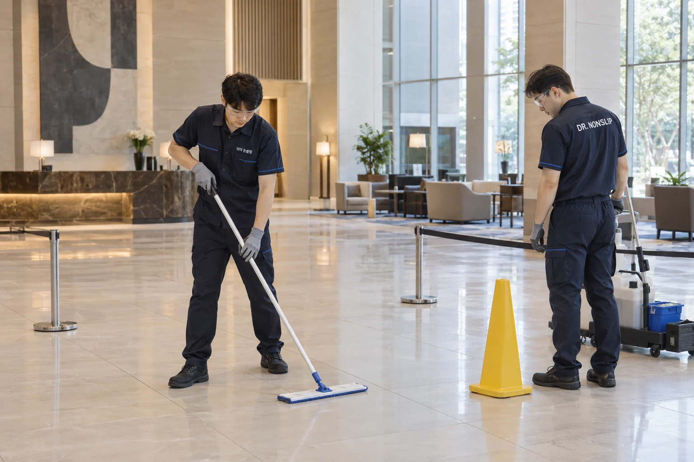

호텔·수영시설의 미끄럼방지
젖은 로비와 수영장 통로에서의 미끄러짐은 고객의 부상과 사고 대응으로 이어질 수 있습니다.
고객이 걷는 바닥의 미끄러움을 줄이고, 공간의 외관도 함께 살핍니다.


광택이 중요한 로비도, 샘플부터.
식각은 기존 타일·석재의 표면에 작용하는 시공입니다. 호텔 로비는 미끄럼 변화만큼 색감과 광택도 중요한 선택 기준입니다.
작은 구역을 먼저 처리해 외관 변화를 살펴보고, 호텔의 마감 기준에 맞는지 판단한 뒤 본 작업을 정합니다.

손님의 하루와 겹치지 않게.
- 로비·출입구
- 체크인·체크아웃 등 이용이 몰리는 시간대를 피해 작업합니다. 출입구가 여러 곳이라면 대체 동선을 활용할 수 있는지 살핍니다.
- 수영장·샤워실
- 이용 마감 시간이나 휴장일에 맞춰 작업 범위를 정합니다. 로비와 재질이 다를 수 있어 각각의 바닥 조건을 적용합니다.
- 공용화장실
- 대체 이용 공간이 있는지와 청소 일정을 함께 고려해 구역별 순서를 정합니다.
작업 중인 구역은 통행을 제한합니다. 이용 재개 시점과 구역별 작업 가능 여부는 현장 조건에 따라 달라집니다.
외관과 이용 시간. 호텔의 기준으로 선택하세요.
로비는 색·광택이 수용 가능한지, 수영시설은 젖는 동선에 맞는지. 공간별 샘플과 운영 일정을 바탕으로 필요한 공용 구역부터 시공을 정할 수 있습니다.
사진은 공간과 작업을 설명하기 위한 브랜드 이미지입니다.